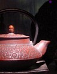

about tea: history
The Legendary Origins of Tea
The history of tea extends so far into the past that its very origins are shrouded by legend. It is said that Emperor Shen Nung, who ruled China in 2700 BC, used to enjoy relaxing in his garden with a cup of hot water. It was during one of these respites that a tea leaf happened to float down from a nearby bush, and land directly in the Emperor's cup.  The new drink quickly became the Emperor's favorite, and a taste for tea quickly spread throughout the aristocracy, and it wasn't long before tea was the favored drink throughout all of China.
It was in the 16th century that Portuguese missionaries were seduced by tea's flavor and the intricate customs which surrounded it. A demand for the drink quickly arose, and the Dutch East India Company began importing it into Europe.
It's most likely that it was the Japanese green teas which were first to arrive in the west, owing to Japan's liberal trade policies with the Dutch. Initially, tea was chiefly recommended to Europeans for its purported medicinal qualities; it was claimed by the Dutch that tea was a cure for nearly every disease imaginable.
Due to the expense of bringing tea halfway across the globe, it was initially consumed primarily by aristocrats and the rich. Over time the cost of tea fell enough for people from all walks of life to be able to enjoy it. By 1717 Thomas Twining's English coffee house became a tea shop; and unlike the ubiquitous London coffee houses of the era, the doors of Twining's were open to both men and women. Meeting friends over tea became a staple of British life, and afternoon tea became a lasting tradition that still continues today.